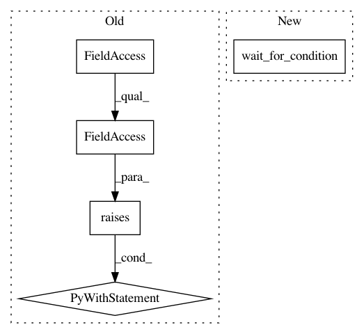

0389735d7a00932433f258595e57aa87171a4927,python/ray/tests/test_reference_counting.py,,_fill_object_store_and_get,#Any#Any#Any#Any#,32
Before Change
if succeed:
ray.get(oid)
else:
with pytest.raises(ray.exceptions.RayTimeoutError):
ray.get(oid, timeout=0.1)
def _check_refcounts(expected):
actual = ray.worker.global_worker.core_worker.get_all_reference_counts()
assert len(expected) == len(actual)
for object_id, (local, submitted) in expected.items():
After Change
oid = ray.ObjectID(oid)
if succeed:
wait_for_condition(
lambda: ray.worker.global_worker.core_worker.object_exists(oid))
else:
wait_for_condition(
lambda: not ray.worker.global_worker.core_worker.object_exists(oid)
)
In pattern: SUPERPATTERN
Frequency: 3
Non-data size: 5
Instances
Project Name: ray-project/ray
Commit Name: 0389735d7a00932433f258595e57aa87171a4927
Time: 2020-07-09
Author: swang@cs.berkeley.edu
File Name: python/ray/tests/test_reference_counting.py
Class Name:
Method Name: _fill_object_store_and_get
Project Name: ray-project/ray
Commit Name: dcb9e03fde3116f7c43787947ea6f0b37ddb3210
Time: 2020-09-08
Author: rkooo567@gmail.com
File Name: python/ray/tests/test_placement_group.py
Class Name:
Method Name: test_atomic_creation
Project Name: ray-project/ray
Commit Name: 0389735d7a00932433f258595e57aa87171a4927
Time: 2020-07-09
Author: swang@cs.berkeley.edu
File Name: python/ray/tests/test_reference_counting_2.py
Class Name:
Method Name: _fill_object_store_and_get